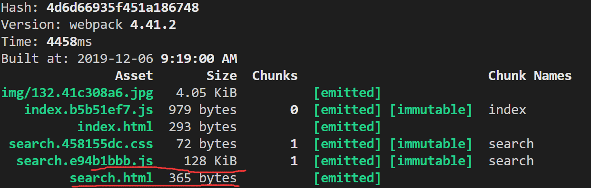
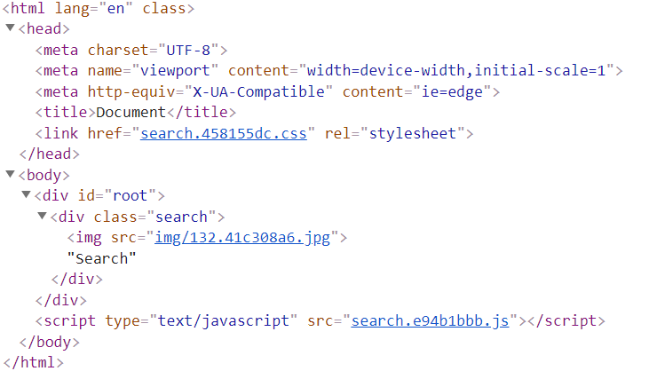
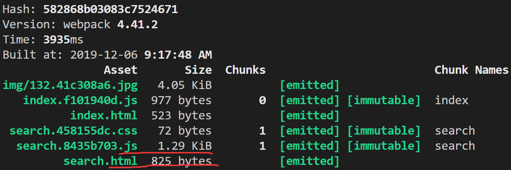
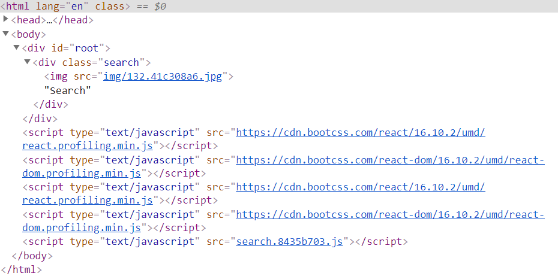

本文继续介绍几个 webpack 中常见的配置。
多页面打包
在 webpack 中，我们通过设置 entry 字段来指定页面入口。同时我们也可以使用 html-webpack-plugin 插件来设置每个入口的 html 页面。
但是如果是像上面链接中那样，手动设置每个页面，较为麻烦，需要手动去维护这两个字段。
在 webpack 中，我们可以使用 glob 读取文件，并根据指定的规则匹配到模块名，并动态设置 entry 及 html-webpack-plugin 插件的内容。
假设我们规定，所有页面的入口文件都为 /src/模块名/index.js，即 src 下的一级目录中的 index.js；同时使用的页面模板文件为 /src/模块名/index.html 。
首先，安装下 glob：
接着修改 webpack.config.js：
1
2
3
4
5
6
7
8
9
10
11
12
13
14
15
16
17
18
19
20
21
22
23
24
25
26
27
28
29
30
31
32
33
34
35
36
37
38
39
40
41
42
43
44
45
46
47
48
49
50
51
52
53
54
55
|
const glob = require('glob')
const path = require('path')
const HtmlWebpackPlugin = require('html-webpack-plugin')
const setMPA = () => {
const entry = {}
const htmlWebpackPlugins = []
const entryFiles = glob.sync(path.join(__dirname, './src/*/index.js'))
Object.keys(entryFiles)
.map(index => {
const entryFile = entryFiles[index]
const match = entryFile.match(/src\/(.*)\/index\.js/)
const pageName = match && match[1]
entry[pageName] = entryFile
htmlWebpackPlugins.push(
new HtmlWebpackPlugin({
inlineSource: '.css$',
template: path.join(__dirname, `src/${pageName}/index.html`),
filename: `${pageName}.html`,
chunks: [pageName],
inject: true,
minify: {
html5: true,
collapseWhitespace: true,
preserveLineBreaks: false,
minifyCSS: true,
minifyJS: true,
removeComments: false
}
})
)
})
return {
entry,
htmlWebpackPlugins
}
}
const { entry, htmlWebpackPlugins } = setMPA()
module.exports = {
entry: entry,
output: {
path: path.join(__dirname, 'dist'),
filename: '[name].[chunkhash:8].js'
},
plugins: [
].concat(htmlWebpackPlugins),
}
|
source map 的使用
什么是 source map：参见 阮一峰 - JavaScript Source Map 详解
source map 有五个关键字：
- eval: 使用
eval 包裹代码
- source map: 产生 .map 文件
- cheap: 不包含列信息
- inline: 将 .map 作为 DataURI 嵌入，不单独产生 .map 文件
- module: 包含 loader 的 sourcemap
在 webpack 中，可以通过设置 devtool 字段，来设置 source map 的类型。
devtool 字段的取值为上述五个关键字的组合，具体取值可参考官方文档。
使用例子如下：
1
2
3
4
5
6
7
8
9
10
11
12
|
const path = require('path')
module.exports = {
entry: './src/index.js',
output: {
path: path.join(__dirname, 'dist'),
filename: '[name].[chunkhash:8].js'
},
devtool: 'cheap-module-source- map'
}
|
公共资源提取
基础库分离
在 React 开发时，基本上每个页面都会用到 React / ReactDOM，在每次打包的时候，构建工具就会把 React / ReactDOM 打包到 bundle 里，导致构建速度较慢，因此，可以使用 html-webpack-externals-plugin 将 React / ReactDOM 基础库通过 CDN 的形式引入，而不打入 bundle 中。
使用方法（以 React 为例）：
在webpack.config.js 中添加 html-webpack-externals-plugin 的配置。注意：html-webpack-externals-plugin 需要添加在 html-webpack-plugin 之后：
1
2
3
4
5
6
7
8
9
10
11
12
13
14
15
16
17
18
19
20
21
22
23
24
25
26
27
28
29
30
31
32
33
34
|
const path = require('path')
const HtmlWebpackPlugin = require('html-webpack-plugin')
const HtmlWebpackExternalsPlugin = require('html-webpack-externals-plugin')
const { entry, htmlWebpackPlugins } = setMPA()
module.exports = {
entry: entry,
output: {
path: path.join(__dirname, 'dist'),
filename: '[name].[chunkhash:8].js'
},
plugins: [
]
.concat(htmlWebpackPlugins)
.concat([
new HtmlWebpackExternalsPlugin({
externals: [
{
module: 'react',
entry: 'https://cdn.bootcss.com/react/16.10.2/umd/react.profiling.min.js',
global: 'React'
},
{
module: 'react-dom',
entry: 'https://cdn.bootcss.com/react-dom/16.10.2/umd/react-dom.profiling.min.js',
global: 'ReactDOM'
}
]
})
]),
}
|
需要注意的是，这样子会导致页面多次引入 React / ReactDOM，暂不知如何解决。
提取前：


提取后：


使用 SplitChunksPlugin 进行公共脚本分离
SplitChunksPlugin是 webpack4 内置的插件，替代 CommonsChunkPlugin 插件，更多介绍请参考官方文档
1
2
3
4
5
6
7
8
9
10
11
12
13
14
15
16
17
18
19
20
21
22
23
24
25
26
27
28
29
30
31
|
const path = require('path')
module.exports = {
optimization: {
splitChunks: {
chunks: 'all',
minSize: 30000,
maxSize: 0,
minChunks: 2,
maxAsyncRequests: 5,
maxInitialRequests: 3,
automaticNameDelimiter: '~',
automaticNameMaxLength: 30,
name: true,
cacheGroups: {
vendors: {
test: /[\\/]node_modules[\\/]/,
priority: -10
},
default: {
minChunks: 2,
priority: -20,
reuseExistingChunk: true
}
}
}
}
}
|